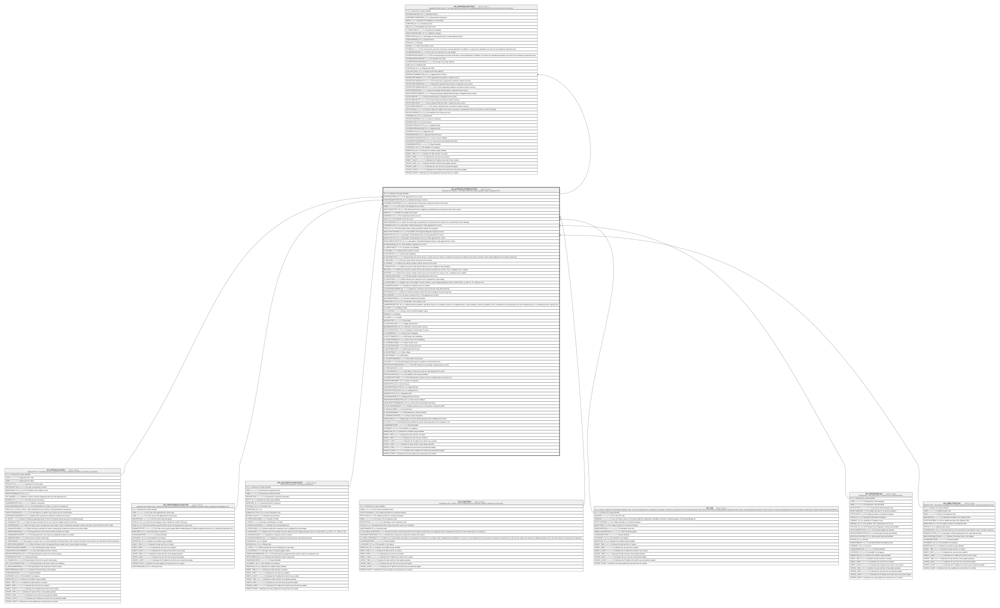

HR_APPRAISALFORMSECTION
Description
Appraisal Form Section - This entity contains the section definition within an appraisal form.
Columns
| Name | Type | Default | Nullable | Children | Parents | Comment |
|---|---|---|---|---|---|---|
| ID | bigint | false | HR_APPRAISALSECTION | Indicates the unique identifier | ||
| APPRAISALFORM_ID | bigint | false | HR_APPRAISALFORM | The appraisal form to be used | ||
| APPRFORMSECTIONTYPE_ID | bigint | true | HR_APPRFORMSECTIONTYPE | Identify which type of section | ||
| ASSESMENTCOMPONENT_ID | bigint | true | HR_ASSESMENTCOMPONENT | Identify which assessment component is linked to this section | ||
| NAME | nvarchar(255) | true | The name to be displayed for the section | |||
| WEIGTHDISTRTYPE_ID | bigint | true | This field shows how the weightings are distributed across elements in the same section. | |||
| WEIGHT | decimal | true | Indicates the weight of the section. | |||
| COMPGRID_ID | bigint | true | HR_COMPGRID | The Compentency Grid to be used | ||
| JOB_ID | bigint | true | HR_JOB | The Identifier of the Job record. | ||
| QUESTIONNAIRE_ID | bigint | true | When the section type is questionnaire, this field stores the reference to a questionnaire in the catalogue. | |||
| TRAININGPLAN_ID | bigint | true | HR_TRAININGPLAN | description of field training plan for entity appraisal form section | ||
| SCALE_ID | bigint | true | This field indicate which rating scale will be used for the evaluation. | |||
| OBJECTIVECATEGORY_ID | bigint | true | The identifier of the Appraisal Objective Categories record. | |||
| OBJECTIVEPLAN_ID | bigint | true | HR_OBJECTIVEPLAN | description of field objective plan for entity appraisal form section | ||
| OBJECTIVETYPE_ID | bigint | true | description of field objective source for entity appraisal form section | |||
| DEFAULTOBJECTIVETYPE_ID | bigint | true | description of field default objective type for entity appraisal form section | |||
| APPRAISALROLE_ID | bigint | true | The identifier of appraisal role record. | |||
| IS_JOBSUITABILITY | smallint | true | Calculate Job Suitability | |||
| IS_SCORED | smallint | true | States that the section is scored. | |||
| IS_EDITWEIGTH | smallint | true | Edit Section Weighting | |||
| IS_SENTIMENTCALC | smallint | true | Using this flag, the system will use a remote service to retrieve a sentiment score based on analysis of the section comments, which will be displayed on the related components. | |||
| IS_READONLY | smallint | true | If true the section will be read only for the reviewer. | |||
| IS_CANADD | smallint | true | When true it will be possible to add an element in the section. | |||
| IS_SINGLETYPE | smallint | true | When true you can add only the Type you chose in Objective Type dropdown | |||
| MINITEMS | smallint | true | Defines the minumum number of items that should be included in the section. If set, a validation rule is enabled. | |||
| MAXITEMS | smallint | true | Defines the maximum number of items that can be included in the section. If set, a validation rule is enabled. | |||
| IS_MANUALADJSCORE | smallint | true | This flag enables manual adjustment of the score. | |||
| IS_PERCSCORE | smallint | true | Defines whether the component score is displayed as a percentage. | |||
| IS_SIGNSCORE | smallint | true | Applies only if “Percentage” has been selected; used to display divergence above or below 100%, e.g. 93% as -7%, 105% as +5% | |||
| IS_NUMERICSCORE | smallint | true | Display the component score as number. | |||
| IS_DISCRATESCOREVALUE | smallint | true | Display the component result as discrete value (drop down list). | |||
| RATINGMODE_ID | bigint | true | Defines the default evaluation method that will be displayed during the appraisal. | |||
| INCLUDEBARS | smallint | true | It is the flag to include B.A.R.S. in the appraisal form section. | |||
| INCLUDECOMPDESC | smallint | true | Include Competency Description | |||
| WIDGETANALYTIC_ID | bigint | true | The identifier of the Analytic record. | |||
| COMPETENCIESTYPE_ID | bigint | true | With this field is possible to specify the source of a competency section of an appraisal form; a choice between a specific Competency Grid, Competencies from the primary Job of the evaluated person, or Competencies from a specific Job. | |||
| IS_STARS | smallint | true | Display as Stars | |||
| IS_COLORSIGN | smallint | true | Change colour for positive/negative values | |||
| RANKING | bigint | true | Ranking | |||
| IS_VISIBLE | smallint | true | Visible | |||
| DESCRIPTION | nvarchar(500) | true | Description | |||
| IS_CANTOGGLEQST | smallint | true | Toggle Questionnaire | |||
| REVIEWERNOTEACL_ID | bigint | true | Reviewer Comment type of access | |||
| EVALUATEDNOTEACL_ID | bigint | true | Employee Comment type of access | |||
| IS_SHOWWEIGHT | smallint | true | Show Section Weighting | |||
| IS_EDITITEMWEIGTH | smallint | true | Edit Section Item Weighting | |||
| IS_SHOWITEMWEIGTH | smallint | true | Show Section Item Weighting | |||
| IS_SHOWSECSCORE | smallint | true | Show Section Score | |||
| IS_SHOWITEMSCORE | smallint | true | Show Section Item Score | |||
| IS_EDITITEMSCORE | smallint | true | Edit Section Item Scores | |||
| IS_SHOWTARGET | smallint | true | Show Target | |||
| IS_EDITTARGET | smallint | true | Edit Target | |||
| IS_SHOWOTHERASSES | smallint | true | Show Other Assessments | |||
| IS_PAYOUT | smallint | true | This field indicates if the payout is enabled on current section form. | |||
| OPPORTUNITYPERCENTAGE | decimal | true | This field indicates the percentage of opportunity per section. | |||
| IS_THREASHOLDS | smallint | true | ||||
| IS_COPYOBJRESULT | smallint | true | description of field copy results for entity appraisal form section | |||
| PAYOUTGUIDELINE_ID | bigint | true | The identifier of the Payout Guideline. | |||
| IS_MANDATORYSCORE | smallint | true | This field indicates if all items must be completed when saving the form. | |||
| SOURCECOMPONENT_ID | bigint | true | Source Component | |||
| SOURCETYPE_ID | bigint | true | Score Source | |||
| SOURCEAPPRAISALTYPE_ID | bigint | true | Appraisal Type | |||
| SOURCEAPPRAISALROLE_ID | bigint | true | Appraisal Role | |||
| SOURCECYCLE_ID | bigint | true | Appraisal Cycle | |||
| SOURCEREASON_ID | bigint | true | Appraisal Review Reason | |||
| SOURCENOTFOUNDACTION_ID | bigint | true | Score Source Fallback | |||
| SOURCENOTFOUNDDEFAULT_ID | bigint | true | Score Not Found Default Scale Value | |||
| IS_PUBLISHCOMPONENT | smallint | true | Publish component score in the person component profile | |||
| IS_CANPULLFROM | smallint | true | Can Pull From | |||
| IS_ADVANCEDMODE | smallint | true | Edit Objectives in Advanced Mode | |||
| IS_SHOWDESCRIPTION | smallint | true | Show Section Description | |||
| WIDGETPAGE_ID | bigint | true | Widget page to be shown inside appraisal person additional info section | |||
| IS_ACTIVE | smallint | true | This field determines whether the section will be generated in the evaluation or not. | |||
| SHAREDIDENTIFIER | nvarchar(255) | true | Shared Identifier | |||
| LISTAGENCY_ID | bigint | true | The Identifier of List Agency. | |||
| WORKFLOW_ID | bigint | true | Indicates the workflow unique identifier | |||
| INSERT_TIME | datetime2 | (sysutcdatetime()) | false | Indicates the date and time of creation | ||
| INSERT_USER | nvarchar(100) | (N'MAIN') | false | Indicates the user who has created it | ||
| INSERT_CLIENT | nvarchar(50) | (N'localhost') | false | Indicates the IP address from which it was created | ||
| UPDATE_TIME | datetime2 | (sysutcdatetime()) | false | Indicates the date and time of last update operation | ||
| UPDATE_USER | nvarchar(100) | (N'MAIN') | false | Indicates the user who has executed last update | ||
| UPDATE_CLIENT | nvarchar(50) | (N'localhost') | false | Indicates the IP address from which was executed last update | ||
| UPDATE_COUNT | int | ((0)) | false | Indicates how many update was executed since its creation |
Constraints
| Name | Type | Definition |
|---|---|---|
| PK_HR_APPRAISALFORMSECTION | PRIMARY KEY | CLUSTERED, unique, part of a PRIMARY KEY constraint, [ ID ] |
| UQ_APPRFORMSEC | UNIQUE | NONCLUSTERED, unique, part of a UNIQUE constraint, [ APPRAISALFORM_ID, NAME ] |
| FK_APPFORMSEC_APPRAISALFORM | FOREIGN KEY | FOREIGN KEY(APPRAISALFORM_ID) REFERENCES HR_APPRAISALFORM(ID) ON UPDATE NO_ACTION ON DELETE NO_ACTION |
| FK_APPFORMSEC_APPRFORMSECTYPE | FOREIGN KEY | FOREIGN KEY(APPRFORMSECTIONTYPE_ID) REFERENCES HR_APPRFORMSECTIONTYPE(ID) ON UPDATE NO_ACTION ON DELETE NO_ACTION |
| FK_APPFORMSEC_ASSESMENTCOMP | FOREIGN KEY | FOREIGN KEY(ASSESMENTCOMPONENT_ID) REFERENCES HR_ASSESMENTCOMPONENT(ID) ON UPDATE NO_ACTION ON DELETE NO_ACTION |
| FK_APPFORMSEC_COMPGRID | FOREIGN KEY | FOREIGN KEY(COMPGRID_ID) REFERENCES HR_COMPGRID(ID) ON UPDATE NO_ACTION ON DELETE NO_ACTION |
| FK_APPFORMSEC_JOB | FOREIGN KEY | FOREIGN KEY(JOB_ID) REFERENCES HR_JOB(ID) ON UPDATE NO_ACTION ON DELETE NO_ACTION |
| FK_APPFORMSEC_OBJECTIVEPLAN | FOREIGN KEY | FOREIGN KEY(OBJECTIVEPLAN_ID) REFERENCES HR_OBJECTIVEPLAN(ID) ON UPDATE NO_ACTION ON DELETE NO_ACTION |
| FK_APPFORMSEC_TRAININGPLAN | FOREIGN KEY | FOREIGN KEY(TRAININGPLAN_ID) REFERENCES HR_TRAININGPLAN(ID) ON UPDATE NO_ACTION ON DELETE NO_ACTION |
Indexes
| Name | Definition |
|---|---|
| PK_HR_APPRAISALFORMSECTION | CLUSTERED, unique, part of a PRIMARY KEY constraint, [ ID ] |
| UQ_APPRFORMSEC | NONCLUSTERED, unique, part of a UNIQUE constraint, [ APPRAISALFORM_ID, NAME ] |
Relations

Generated by tbls